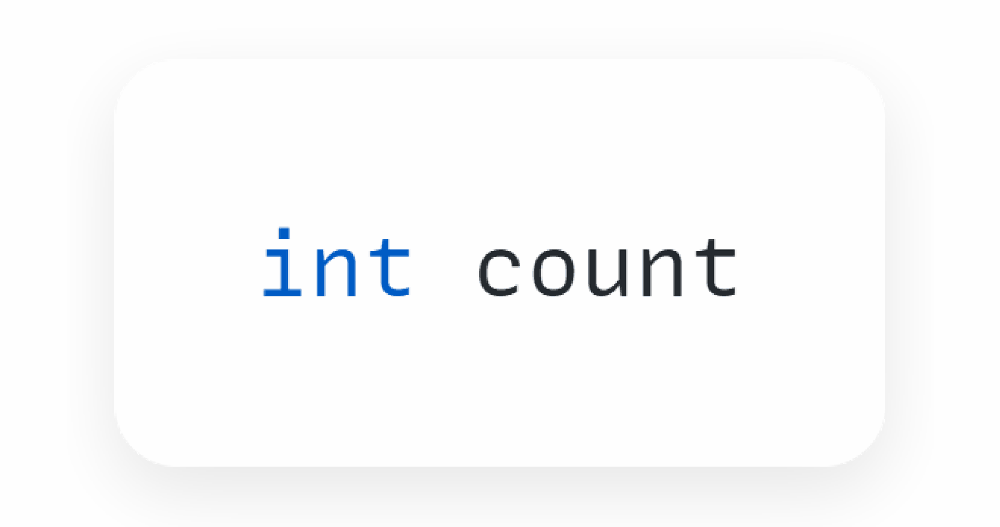

Переменные и константы в Dart
Зачем нужны переменные
На прошлом занятии мы практиковались с арифметическими операциями. Но любая операция с числами не имеет смысла, если невозможно получить результат в виде значения.
Для хранения любых данных, в том числе и результата арифметических операций, в программировании используют переменные.
Переменная
Переменная - это область памяти, где можно хранить и изменять данные.
У переменной всегда есть название (имя переменной)
Переменная как коробка
Можно представить переменную как коробку, внутри которой находится значение.
У этой коробки есть ярлык - имя переменной. Обращаясь к коробке по её имени, вы получаете доступ к хранящемуся в ней значению.
Эта схема иллюстрирует, как переменная может хранить данные, подобно тому, как коробка может содержать какой-то предмет. На коробке написано Имя. Снаружи коробки находится метка Данные, указывающая на значение. Стрелка показывает, что это значение помещается внутрь коробки.
Зачем нужно использовать коробку с именем, чтобы хранить значение, а не просто использовать значения напрямую?
Dart - Использование литералов


void main() {
print(42); // Целое число 42
print(42 + 7); // Сложим два целых числа
print("Привет, Dart"); // Напечатаем строку
}Рассмотрим аналогию
Письмо для человека, с которым мы недавно познакомились
Аналогия
Привет, Артем, было приятно встретиться с тобой сегодня на конференции разработчиков. С нетерпением жду встречи в пятницу. Хорошего дня!
Такое письмо прекрасно подходит для случая именно с Артемом. Но что, если вам нужно будет писать такие письма многим людям, с небольшими изменениями?
Привет, Юля, было приятно встретиться с тобой сегодня на конференции разработчиков. С нетерпением жду встречи в пятницу. Хорошего дня!
Привет, Андрей, было приятно встретиться с тобой сегодня на мероприятии по настольным играм. С нетерпением жду встречи в субботу. Хорошего дня!
Привет, Настя, было приятно встретиться с тобой сегодня на курсах.
С нетерпением жду встречи в понедельник. Хорошего дня!
Было бы гораздо эффективнее создать шаблон письма, оставив пробелы для изменяющихся данных.
Шаблон письма
Привет { имя } , было приятно встретиться с тобой сегодня в { место встречи }.
С нетерпением жду встречи в { дата } . Хорошего дня!
Создание приложения похоже на этот процесс. Некоторые данные заменяются переменными, тогда как другие части приложения остаются неизменными.
Определение переменной и её использование
Dart - Объявление переменной
void main() {
String name = "Юля"; // Объявляем строковую переменную
print(name); // Вызываем переменную
}Объявление переменной
При определении переменной присваиваем ей уникальное имя для идентификации.
Указываем тип данных, который она может хранить.
Задаем начальное значение, которое будет сохранено в переменной.
Оператор присваивания
В объявлении переменной после имени переменной следует символ равно =
Этот символ называется оператором присваивания.
Оператор присваивания сохраняет значение в переменную.
Dart - Целочисленная переменная
void main() {
int count = 2; // Объявляем целочисленную переменную
print(count); // Вызываем переменную
}
Инициализация переменной
Фраза: переменная count инициализирована значением 2 означает, что 2 это первое значение, сохраненное в переменной при её создании.
В переменную значения присваиваются справа налево
Наименование переменных
Что самое сложное в программировании? Придумать название переменной 🤣
Правило camelCase
Имена переменных должны следовать правилу camelCase.
Первое слово пишется с маленькой буквы, а если в имени несколько слов, то каждое последующее слово начинается с заглавной буквы.
Dart - Стиль именования camelCase
void main() {
int numberOfMessage = 7384;
String cityName = "Бийск";
}Регистр символов имеет значение!
Регистр символов (прописные и заглавные буквы) имеет значение! Например, language не то же самое, что Language
Dart - Чувствительность к регистру
void main() {
// Это три разных переменных!
// Регистр имеет значение!
String language = "Dart";
String Language = "Dart";
String LANGUAGE = "Dart";
}Изменение переменной
Объявим мутабельную(изменяемую) переменную с именем dayOfWeek и распечатаем её значение до и после изменения
Обновление значения переменной
Для изменения значения переменной не нужно объявлять её заново!
Просто присвойте ей новое значение с помощью оператора =
Dart - Изменение значения переменной
void main() {
String dayOfWeek = "Понедельник";
print(dayOfWeek); // "Понедельник"
dayOfWeek = "Среда"; // Обновляем значение переменной
print(dayOfWeek); // "Среда"
}Переменные и оперативная память
Данные в памяти
Для того чтобы программа могла воспользоваться данными, эти данные нужно где-то хранить.
Хранятся они в специальных ячейках памяти (оперативной памяти)
... не в красных стаканчиках конечно 😅
Когда мы в программе пишем значение просто 42 или Привет Dart, то не понятно что это за данные, где они находятся, откуда взялись и как с ними работать потом.
Это какие-то магические значения
Переменные помогают контролировать данные, с помощью переменной мы можем сохранить данные в оперативной памяти и потом ими воспользоваться
Чисто технически в самой переменной не находятся данные, в ней находится ссылка на область памяти, где хранятся данные.
Dart - Переменные и память
void main() {
String dayOfWeek = "Понедельник";
print(dayOfWeek); // "Понедельник"
dayOfWeek = "Вторник"; // Обновляем значение переменной
print(dayOfWeek); // "Вторник"
}Ячейки памяти
Технически хранение переменных можно представить как ячейки памяти (оперативной) в виде таблицы.
Столбцы и строки этой таблицы пронумерованы, т.е. представляют из себя адреса, и вот по этому адресу в память можно записать какие-то данные.
Константы
Константы
Это переменные значения которых нельзя изменить
В Dart есть два вида констант
final- является константной времени выполнения (run-time constant)const- является константной времени компиляции (compile-time constant)
Dart - Константа final
main() {
final double pi = 3.14; // Объявляем final константу
pi = 4; // Ошибка!
print(pi);
}Dart - Константа const
main() {
const name = "Юля"; // Объявляем const константу
name = 'Маша'; // ! Ошибка - Constant variables can't be assigned a value
}Отличие в том, что const всегда должна иметь определенное значение!
Dart - Особенности const
main() {
// Нельзя оставить const без инициализации!
const value; // Ошибка!
value = 42 // Ошибка!
// Нельзя в const присвоить вычисляемое выражение!
const today = DateTime.now(); // Ошибка!
print('Today: $today'); // Ошибка!
}Использование const полезно для производительности в некоторых местах, особенно при написании кода на Flutter. А пока что будем пользоваться константой final
Шаблонные строки
Рассмотрим пример, когда вывод простого числа не очень информативен. Было бы полезнее вывести сообщение, поясняющее, что означает число
У вас 2 непрочитанных сообщенияDart - Вывод без интерполяции
main() {
int count = 2;
print("У вас count непрочитанных сообщений");
// У вас count непрочитанных сообщений
}Можно взять и объединить несколько строчек друг с другом и с переменной. Но … код получается плохо читаемый и многословный 😥
Dart - Конкатенация строк
main() {
int count = 2;
// Такой подход называется КОНКАТЕНАЦИЯ строк
print("У вас " + count.toString() + " непрочитанных сообщений");
}Шаблонные строки
Чтобы это безобразие исправить нужно использовать шаблонные строки
Добавьте знак доллара $ перед именем переменной count
В этом случае выражение-шаблон $count вычисляется как число 2
Dart - Интерполяция строк
main() {
int count = 2;
// Такой подход называется ИНТЕРПОЛЯЦИЯ строк
print("У вас $count непрочитанных сообщений");
// У вас 2 непрочитанных сообщения
}Если нужно выполнить более сложное выражение внутри строки то используем { }
Dart - Сложная интерполяция
main() {
int unreadCount = 5;
int readCount = 100;
print("У вас ${unreadCount + readCount} непрочитанных сообщений");
// У вас 105 сообщений
}Модуль Random: Генерация случайных чисел
В программировании часто возникает необходимость использовать случайные числа, например, для создания непредсказуемого поведения в играх, для тестирования или в криптографии. В Dart для этого используется класс Random из библиотеки dart:math.
Подключение библиотеки
Чтобы использовать класс Random, необходимо импортировать библиотеку dart:math в начале вашего файла.
Dart - Импорт dart:math
import 'dart:math';
void main() {
// Код...
}Создание генератора случайных чисел
Сначала нужно создать экземпляр класса Random. Этот объект будет предоставлять методы для генерации различных случайных значений.
final random = Random();Генерация случайных целых чисел
Метод nextInt(max) генерирует случайное целое число от 0 (включительно) до max (не включительно).
Dart - Случайное целое число
import 'dart:math';
void main() {
final random = Random();
// Случайное число от 0 до 9
int diceRoll = random.nextInt(10);
print("Случайное число от 0 до 9: $diceRoll");
// Чтобы получить число в диапазоне, например от 1 до 6 (как на кубике)
int cube = random.nextInt(6) + 1;
print("Выпало на кубике: $cube");
}Генерация случайных дробных чисел и булевых значений
Метод nextDouble() возвращает случайное число с плавающей точкой между 0.0 (включительно) и 1.0 (не включительно). Метод nextBool() возвращает случайное булево значение: true или false.
Dart - Случайные double и bool
import 'dart:math';
void main() {
final random = Random();
// Случайное дробное число от 0.0 до 1.0
double chance = random.nextDouble();
print("Шанс критического удара: $chance");
// Случайное булево значение
bool isHeads = random.nextBool();
if (isHeads) {
print("Выпал орёл!");
} else {
print("Выпала решка!");
}
}Класс Random является мощным инструментом, который вы будете часто использовать, особенно при создании игр, чтобы сделать их более динамичными и непредсказуемыми.